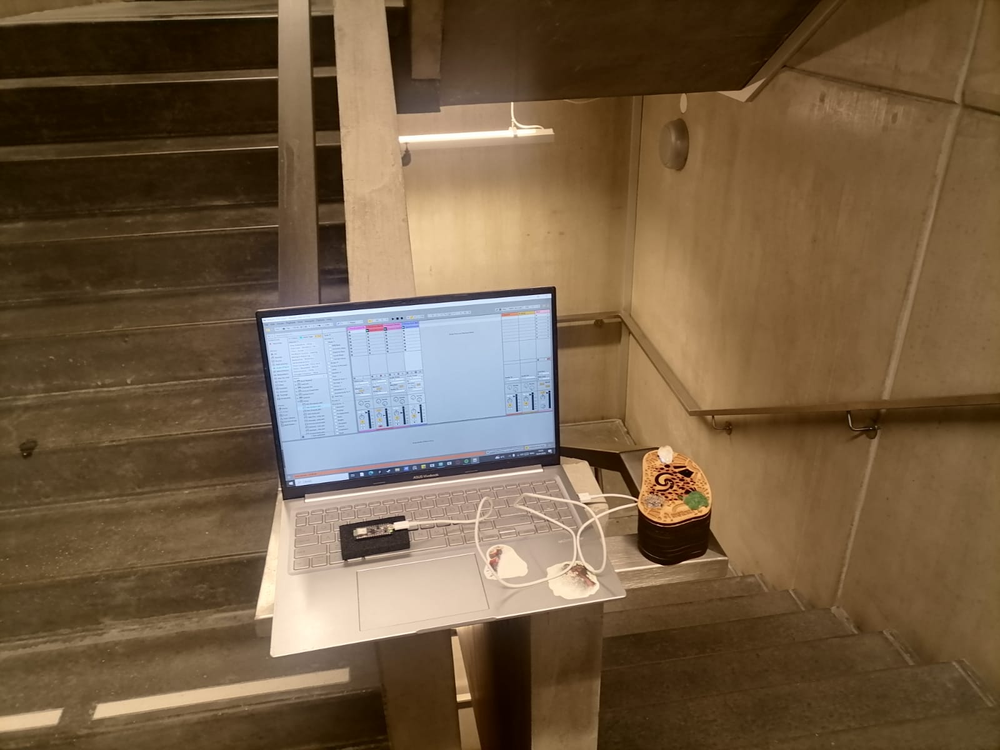
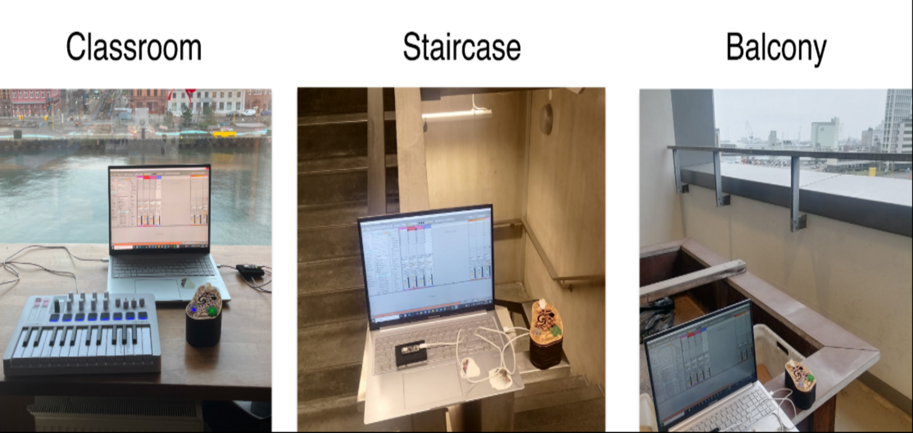
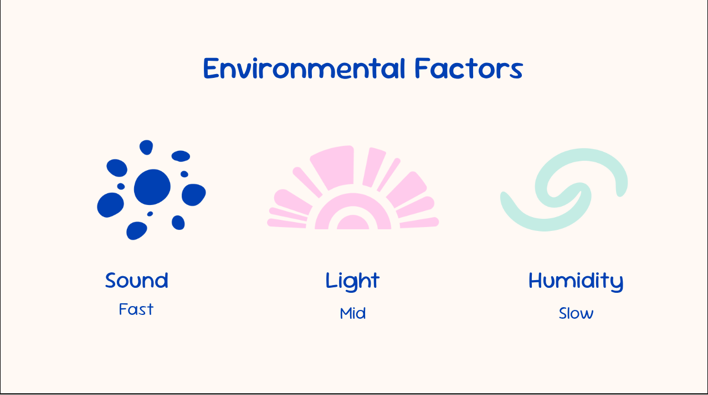

Oikotonika
Digital Musical Instrument Bridging Play and Place
Type: Collaborative Work / Research & Design Project
Role: Development, Interface Design, Research
Team: Stefan Cristache, Lada Tatarkina, Sofia Viviani Helleberg, Nikola Vyskocilova
Tools & Libraries: C++, Arduino IDE, ControlSurface.h, Laser Machining, Hardware Integration

Overview
Oikotonika (Greek: Oikos - home, Tonic - of tone) is a transitional musical instrument that adapts to its environment. It works as a MIDI controller that can be connected to current setups and DAWs such as Ableton Live, while also translating environmental information into sound.
The instrument is designed as a palm-sized, laser-cut MDF object with intentional cutouts for sensor input. By interacting with those openings and shifting the object’s position, the performer can shape how the surrounding environment is translated into music through sonification.

The goal of the project is to help users build a more intimate connection to place through adaptive sonification. Each performance becomes a unique encounter, shaped by context, movement and the qualities that the space itself possesses.
This project represents the pluriversalist view of music, where all places, cultures and traditions coexist to preserve their inherent characteristics. Intruments such as the Brazilian Rebecca were contructed using classical violins, where the instruments was being played and tailored accordingly to preferences and native local traditions.
This quality influenced our design process, where we wanted to create an instrument that would adapt to the local environment and the performer's interactions, resulting in unique expressions of sound through the used of three simple sensors (humidity, light, microphone).

Demo Video
YouTube Demo - Replace [VIDEO_ID] with your YouTube video ID
Design Process
Here I should just briefly mention the design process and the methodology used.
Technical Details
Technologies Used
[List and describe the technologies, languages, libraries, and tools used in this project.]
Key Features
[Describe the main features and functionality of the project.]
[Add more features as needed.]
Challenges & Solutions
[Describe challenges you faced during development and how you solved them.]
[Add additional challenges and solutions.]
Key Learnings
[Discuss what you learned from this project.]
[Add more insights and takeaways.]
Future Improvements
[List potential improvements or features for future iterations.]
Links & Resources
GitHub Repository - [Add link to your GitHub repo]
Live Demo - [Add link to live project if available]